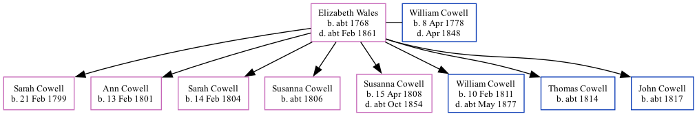

Elizabeth Cowell (née Wales) c1768 - c1861
[ Home ] | [ Calendar ] | [ Surnames Index ] | [ Family History ]Elizabeth Wales, the wife of William Castle Cowell (the four times great-uncle of Nigel Horne), was born in Kent, England c. 17681 and married William (with whom she had 8 children: Sarah, Ann, Sarah Fowler, Susanna, Susanna Eleanor, William Castle, Thomas Castle and John) in St Peters, Thanet, Kent on Jul 18, 17983. On Jun 6, 1841, she lived at George Hill, St Peters, Thanet, Kent1.
She died c. Feb 1861 in Thanet, Kent, England2.
Children
- Sarah was born on Feb 21, 1799
- Ann was born on Feb 13, 1801
- Sarah Fowler was born on Feb 14, 1804
- Susanna was born c. 1806
- Susanna Eleanor was born on Apr 15, 1808
- William Castle was born on Feb 10, 1811
- Thomas Castle was born c. 1814
- John was born c. 1817
Citations
- 1841 England, Wales & Scotland Census - Findmypast (was age 73 and the wife of the head of the household)
- England & Wales deaths 1837-2007 - Findmypast
- England Marriages 1538-1973 - Findmypast
Media
England & Wales deaths 1837-2007 - BMD/D/1861/1/AD/000633/032
1841 England, Wales & Scotland Census - GBC-1841-0013965436
Family Tree

Map
Generated by ged2site. Last updated on Feb 28, 2025